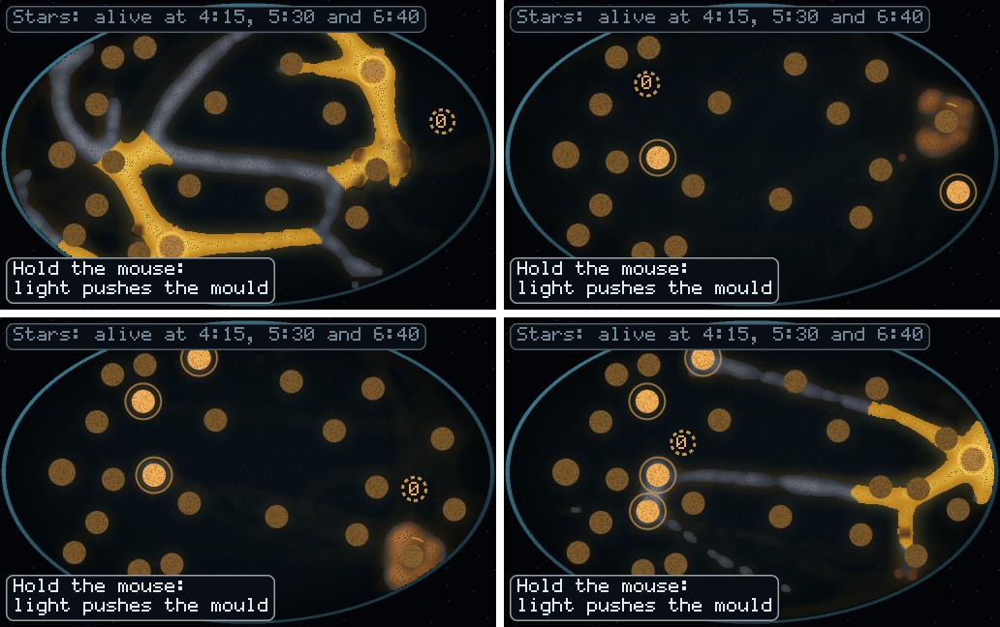
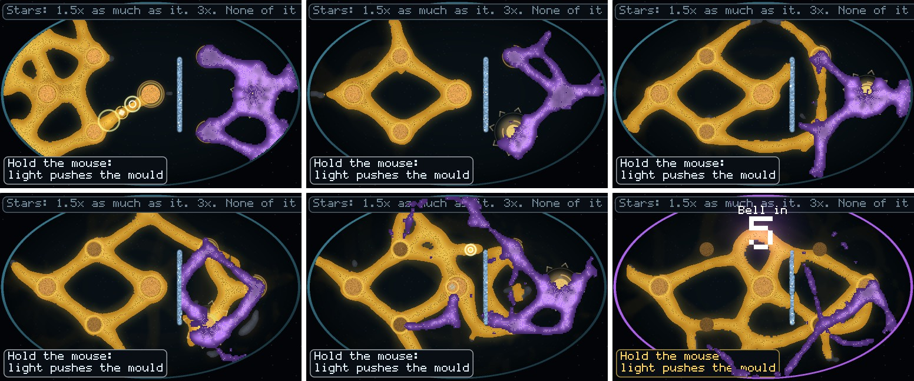
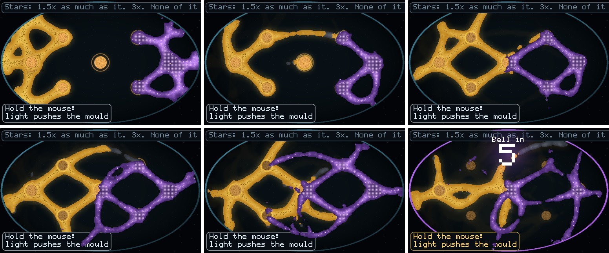

<title>Mould Review Two</title>
<meta name="claude:viewport-fit-sides" content="cover">
<link rel="stylesheet" href="https://fonts.googleapis.com/css2?family=IBM+Plex+Mono:wght@400;500&family=IBM+Plex+Sans:wght@400;500;600&family=Space+Grotesk:wght@500;600&display=swap">
<style>
/* One reading column; verdict first, then each dish with its pictures and its table of runs. */
:root {
  --bg: #eef2f0; --panel: #ffffff; --ink: #17222a; --dim: #55646c; --line: #cdd7d6;
  --amber: #a86a00; --amber-soft: #f6e7c4; --rim: #2b6f86; --good: #2f6b3c; --bad: #a3402d;
  --display: "Space Grotesk", "IBM Plex Sans", system-ui, sans-serif;
  --body: "IBM Plex Sans", system-ui, -apple-system, "Segoe UI", sans-serif;
  --mono: "IBM Plex Mono", ui-monospace, "SF Mono", Menlo, monospace;
}
@media (prefers-color-scheme: dark) {
  :root:not([data-theme="light"]) {
    --bg: #0a1015; --panel: #111a21; --ink: #e6ecea; --dim: #96a5aa; --line: #24323b;
    --amber: #f0a92b; --amber-soft: #2c2412; --rim: #5fa9c2; --good: #7fc48d; --bad: #ee8a73; color-scheme: dark;
  }
}
:root[data-theme="dark"] {
  --bg: #0a1015; --panel: #111a21; --ink: #e6ecea; --dim: #96a5aa; --line: #24323b;
  --amber: #f0a92b; --amber-soft: #2c2412; --rim: #5fa9c2; --good: #7fc48d; --bad: #ee8a73; color-scheme: dark;
}
body { background: var(--bg); color: var(--ink); font-family: var(--body); font-size: 16px; line-height: 1.55; margin: 0;
  padding-left: max(16px, env(safe-area-inset-left, 0px)); padding-right: max(16px, env(safe-area-inset-right, 0px)); padding-block: 28px 64px; }
main { max-width: 760px; margin: 0 auto; display: flex; flex-direction: column; gap: 20px; }
h1, h2, h3 { font-family: var(--display); text-wrap: balance; line-height: 1.2; margin: 0; }
h1 { font-size: 2rem; font-weight: 600; }
h2 { font-size: 1.35rem; font-weight: 600; margin-top: 24px; padding-top: 18px; border-top: 2px solid var(--rim); }
h3 { font-size: 1.05rem; font-weight: 600; margin-top: 6px; }
p { margin: 0; }
.kicker { font-family: var(--mono); font-size: 0.78rem; letter-spacing: 0.08em; text-transform: uppercase; color: var(--dim); }
.lede { font-size: 1.1rem; }
.answer { background: var(--panel); border: 1px solid var(--line); border-left: 4px solid var(--amber); padding: 16px 18px; display: flex; flex-direction: column; gap: 10px; }
ul, ol { margin: 0; padding-left: 1.3em; display: flex; flex-direction: column; gap: 6px; }
figure { margin: 0; display: flex; flex-direction: column; gap: 6px; min-width: 0; }
figure img { width: 100%; height: auto; display: block; border: 1px solid var(--line); background: #06090c; }
figcaption { font-size: 0.9rem; color: var(--dim); }
.count { font-family: var(--mono); font-size: 0.8rem; color: var(--ink); background: var(--amber-soft); padding: 3px 7px; display: inline-block; font-variant-numeric: tabular-nums; }
.scroll { overflow-x: auto; }
table { border-collapse: collapse; width: 100%; font-size: 0.9rem; min-width: 520px; }
th, td { text-align: left; vertical-align: top; padding: 7px 9px; border-bottom: 1px solid var(--line); }
th { font-family: var(--mono); font-size: 0.72rem; letter-spacing: 0.06em; text-transform: uppercase; color: var(--dim); font-weight: 500; }
td.num { font-family: var(--mono); font-variant-numeric: tabular-nums; white-space: nowrap; }
.note { font-size: 0.93rem; color: var(--dim); }
.good { color: var(--good); } .bad { color: var(--bad); }
</style>
<main>
  <div class="kicker">Mould game · independent review of the finished build · 2026-11-10</div>
  <h1>Keep It Alive, water and sleep, and The Wild One</h1>
  <p class="lede">Both dishes work as built and every number in their reports reproduces. Neither is yet a game a person can get better at. Keep It Alive is mostly luck once you use water at all. The Wild One is one opening move, then two minutes of holding the lamp with robot aim.</p>

  <div class="answer">
    <b>What I'd change, in order</b>
    <ol>
      <li><b>The Wild One: score food eaten, not mould at the bell.</b> The food runs out about 10 seconds before the bell, so the stars are read while both moulds are starving and your count is halving.</li>
      <li><b>The Wild One: make the two minutes after the opening matter at a person's aim.</b> Stop playing at 30 seconds and you keep the first star on 8 of 8 seeds. Play on with aim 3 cells off and you get the same star on 7 of 8.</li>
      <li><b>Keep It Alive: find what decides the long games, and hand it to the player.</b> Games end near 4 minutes or run past 7, with almost nothing between, and a sloppier hand does as well as a careful one.</li>
      <li><b>The snip: make it do something or take it off The Wild One.</b> Three snips straight into the wild mould's nest in the first second changed nothing.</li>
      <li><b>Star bars</b> follow from the above. Today the middle star of Keep It Alive is hit once in 32 runs, and the second star of The Wild One is out of reach at a person's aim.</li>
    </ol>
  </div>
  <p class="note">How I tested: I did not play by hand this time. I re-ran the thread's scripted hands, then made them worse on purpose (aim off by a few cells, looking only every 2 or 3 seconds, stopping early) and tried one-move openings. 16 seeds for the re-runs, 8 for each test, about 270 runs in all. Paired by seed; the p values are sign tests. With about 14 comparisons, an 8 of 8 result (p 0.008) does not pass a strict correction (0.004), so read these as consistent directions, not proofs.</p>

  <h2>Keep It Alive, with water and sleep</h2>
  <figure><figcaption>The scripted water hand, seed 2, at 5:00, 6:00, 7:00 and 8:00. <span class="count">mould 937 (26 asleep) · 64 (64 asleep) · 158 (137 asleep) · 465 (3 asleep)</span> The whole mould sleeps as a clump at 6:00 and is a network again at 8:00. That part is good to watch. The dull discs are eaten piles that never leave: about 20 by minute six.</figcaption></figure>

  <h3>What holds up</h3>
  <ul>
    <li><b>The numbers reproduce exactly</b> on 16 seeds: doing nothing 1:08 to 3:48, oats only 2:47 to 5:26, the water hand 2:51 to 10:42.</li>
    <li><b>Water is what does it.</b> The same hand with the lamp but no water lives no longer than oats alone (shorter on 7 of 8, p 0.07). So the gain is the waking, not a side effect of the lamp.</li>
    <li><b>It does not need perfect aim.</b> With water dropped up to 10 cells off and the hand looking only every 3 seconds, it still beat oats alone on 8 of 8.</li>
  </ul>

  <h3>What doesn't</h3>
  <div class="scroll"><table>
    <tr><th>Water hand</th><th>Died by 5:05</th><th>5:05 to 7:20</th><th>Lived past 7:20</th></tr>
    <tr><td>As scripted, 16 seeds</td><td class="num">10</td><td class="num">0</td><td class="num">6</td></tr>
    <tr><td>Aim 6 cells off, looks every 2 s, 8 seeds</td><td class="num">5</td><td class="num">1</td><td class="num">2</td></tr>
    <tr><td>Aim 10 cells off, looks every 3 s, 8 seeds</td><td class="num">2</td><td class="num">0</td><td class="num">6</td></tr>
    <tr><td><b>All 32 runs</b></td><td class="num"><b>17</b></td><td class="num"><b>1</b></td><td class="num"><b>14</b></td></tr>
  </table></div>
  <ul>
    <li><b>Two outcomes, nothing between.</b> A game ends around 4 minutes or runs 7 to 11. The middle star (5:30) was earned once in 32 runs.</li>
    <li><b>Which one you get looks like luck.</b> The clumsiest hand did better than the careful one on 6 of 8 seeds (p 0.29, so no real difference either way). On seed 3 the careful hand died at 4:11 and the clumsy one lived to 11:23. On seed 1 it was 8:01 against 4:08.</li>
    <li><b>The lamp is a few taps.</b> 3 to 22 seconds of lamp in games of 3 to 10 minutes. It counts as a third tool, but only just.</li>
  </ul>
  <p><b>Suggestion.</b> Before tuning, trace the runs one by one to see what the long games have that the short ones lack. My guess, not measured: whether any sleeping mould happens to lie near where a far pile lands, around the twelfth pile. If so, give the player that choice on purpose: show where the next pile will land earlier, and let sleeping mould last longer so that laying down "seed beds" ahead of time is a plan, not a coin toss.</p>

  <h2>The Wild One</h2>
  <figure><figcaption>The scripted hand, seed 1, at 5, 30, 60, 90, 120 and 145 s. <span class="count">you / wild: 1,201/852 at 30 s · 1,285/755 at 60 s · 1,421/547 at 90 s · 1,380/858 at 120 s · 783/204 at the bell · 2 stars</span></figcaption></figure>
  <figure><figcaption>Nobody playing, same seed, same moments. <span class="count">354/543 at the bell · 0 stars</span> It reads clearly as two moulds contesting a dish.</figcaption></figure>

  <h3>What holds up</h3>
  <ul>
    <li><b>The numbers reproduce</b> on 16 seeds: doing nothing 0 stars on all, random 0 on 14 and 1 on 2, the scripted hand 1 on 2, 2 on 10, 3 on 4.</li>
    <li><b>No bug found in the two-mould code.</b> I read the step that runs both moulds, the shared food and the fighting, and checked every 15 steps of four full games that no cell held both moulds, no wild mould stood on salt, and both moulds saw the same food. <span class="count">0 faults</span></li>
    <li><b>No cheap knockout.</b> Camping the lamp on its nest all game, three snips into the nest, salt through the nest, or all three at once: 0 stars on at least 6 of 8 each, none better than doing nothing by more than chance.</li>
  </ul>

  <h3>Is it a game, or watching?</h3>
  <div class="scroll"><table>
    <tr><th>Hand, 8 seeds</th><th>Stars per seed</th><th>You ÷ wild at the bell</th></tr>
    <tr><td>Doing nothing</td><td class="num">0 0 0 0 0 0 0 0</td><td class="num">0.65 to 1.36</td></tr>
    <tr><td>One salt ring round its nest, then nothing</td><td class="num">0 1 0 1 1 1 1 0</td><td class="num">1.29 to 2.90</td></tr>
    <tr><td>Scripted hand, <b>stops at 30 s</b></td><td class="num">1 1 1 1 1 1 1 1</td><td class="num">1.66 to 1.95</td></tr>
    <tr><td>Scripted hand, stops at 60 s</td><td class="num">1 1 1 1 1 1 1 1</td><td class="num">1.70 to 1.94</td></tr>
    <tr><td>Scripted hand, all 150 s, <b>aim 6 cells off</b></td><td class="num">1 1 1 1 1 1 1 1</td><td class="num">1.78 to 2.83</td></tr>
    <tr><td>All 150 s, aim 3 cells off</td><td class="num">1 2 1 1 1 1 1 1</td><td class="num">1.91 to 3.54</td></tr>
    <tr><td>All 150 s, aim 2 cells off</td><td class="num">1 2 2 2 2 2 1 1</td><td class="num">1.67 to 4.13</td></tr>
    <tr><td>All 150 s, exact aim but looks every 2 s</td><td class="num">2 2 1 1 3 1 2 1</td><td class="num">1.90 to cleared</td></tr>
    <tr><td>Scripted hand as written (exact, every frame)</td><td class="num">2 2 2 3 2 1 3 3</td><td class="num">2.02 to cleared</td></tr>
  </table></div>
  <ul>
    <li><b>The first star is the opening.</b> The wall and the first oats, done in the first 30 seconds, earn it on 8 of 8. The thread's own table agrees: the salt wall alone gets one star on 8 of 8.</li>
    <li><b>The other two stars are an aiming test.</b> They need the lamp, snips and oats placed within about 2 cells (8 pixels on screen), over and over for two minutes. At 3 cells off, the result is the same star you had at second 30.</li>
    <li><b>The lamp is held nearly the whole dish</b>: 102 to 150 of 150 seconds in the scripted games.</li>
    <li>Playing on with poor aim and slow reactions does help a little: a bigger lead than stopping at 30 s on 7 of 8 seeds (1 tie, p 0.016), about 1.9x against 1.8x. It is not enough to move a star.</li>
  </ul>
  <p class="note">My aim error moves the lamp, the snips and the oats together, so I can't say which of the three needs the precision. A person aiming at a food pile that sits still may do better than "3 cells off".</p>

  <h3>The bell rings in the middle of a crash</h3>
  <div class="scroll"><table>
    <tr><th>Scripted hand</th><th>You / wild at 2:20</th><th>You / wild at the bell (2:30)</th><th>Lead</th></tr>
    <tr><td>Seed 1</td><td class="num">1,508 / 491</td><td class="num">783 / 204</td><td class="num">3.1x → 3.8x</td></tr>
    <tr><td>Seed 2</td><td class="num">1,439 / 475</td><td class="num">1,031 / 304</td><td class="num">3.0x → 3.4x</td></tr>
    <tr><td>Seed 3</td><td class="num">1,759 / 230</td><td class="num">804 / 226</td><td class="num">7.6x → 3.6x</td></tr>
    <tr><td>Seed 5</td><td class="num">1,613 / 364</td><td class="num">885 / 150</td><td class="num">4.4x → 5.9x</td></tr>
    <tr><td>Seed 6</td><td class="num">1,280 / 734</td><td class="num">776 / 385</td><td class="num">1.7x → 2.0x</td></tr>
  </table></div>
  <p>Four of the seven piles run dry between about 2:10 and 2:20, and the dish can no longer feed the mould it grew. In the last ten seconds your mould loses 28% to 54% of itself, and the lead swings by up to half (seed 3). The stars are read at that moment. Since the dish is about stealing food, the natural score is each mould's share of the food eaten: it only ever grows, and a crash can't change it. Ringing the bell at about 2:15 would also work.</p>

  <h3>The snip</h3>
  <p>The thread reported that the snip does nothing alone. I agree, and it is worse than "used badly": three snips cut straight through the wild nest half a second in, when it is packed at about one walker a cell, still left 0 stars on 8 of 8 and a lead of 0.77x to 1.22x. The cut is 5 cells wide and closes, and the nest refills from its own pile within seconds. A tool that produces nothing you can see breaks the project's second law. Either a cut-off piece of the wild mould should visibly starve, or the snip should come off this dish.</p>

  <h2>Smaller points</h2>
  <ul>
    <li>Wild mould killed by salt is counted as "snipped" in the tallies.</li>
    <li>Both moulds can take the last bite of a pile in the same step, so a pile can give slightly more than it holds, once.</li>
    <li>The window keeps the dish running under the score card, so the live "You / wild" line in the bar drifts away from the card's numbers.</li>
    <li>Frame cost: not re-measured, because my machine was busy with these runs. The thread reports about +1.4 ms a frame for the wild mould, and worst frames of 15 to 22 ms with or without it, which is at or over the 16.7 ms budget either way.</li>
    <li>Finer tubes were not on main when I reviewed, so I did not review them. The from-the-simulation look chosen today already makes strands read thinner with no change to the mould.</li>
  </ul>
</main>
